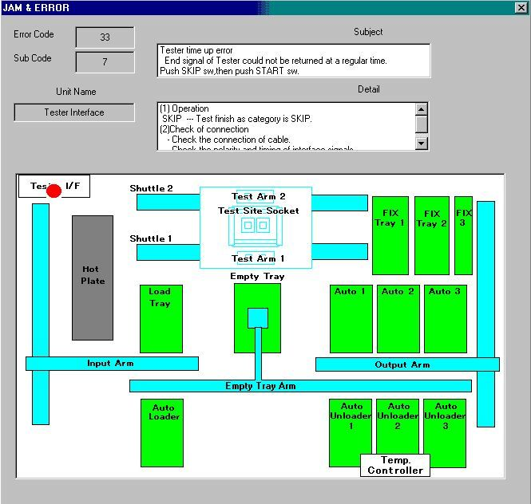

Service History
Subject: NS6040 J0732 “IFUNT time up error” and J0733 “Tester time up error”
Handler Model: NS-6040(ASE)
Controller: SRC520
Date: 7 Nov 2008
Symptom
1. What are likely the possible causes for 0732 “IFUNT time up error” and 0733 “Tester time up error”?
2. If the user always press “skip” button or “retry” button (“alarm reset”, “retry”, “skip” button are prompting user when error occur)
when encountering tester time up for consecutive several times, what will likely be the outcome?
3. What are the possible causes if the outcome on question 2 is IFUNT time up error?
Action
If possible, please provide the full error message or print screen. Because there are some explanation below each error like "Test end signal not received" or "abnormal 5v" etc..Sometimes, it can be just tester time up error so appreciate if you can provide the print screen.
1) IFUNT100A spoil-this would mean permanant error always and not intermittent. Meaning always cannot communicate.
IFUNT100A has a CPU itself so in a case of long usuage(HEX corrupted), pins oxidised, dust collection, may result in intermittent error either one mentioned above.
IFUNT100A CPU communication with control unit CPU/HDD in a case of OLD handler may also result in this error.
Possible solutions-Reload HEX file into IFUNT100A CPU, scandisk(bad sector), defrag HDD, maintenance of IFUNT100A. Every setup file same problem?
I assume tester side, communciation cables all checked.
Need you to confirm which error occurs or both occurs intermittently on same handler.
Last few resorts would be to change HDD, IFUNT100A. Because as you mentioned, the 2 CPU upgrade has no problem which indicates a possible OLD HDD/IFUNT100A sync issue or as suggested above.
This tester time up error is a result of EOT not received within the timeout setting. Which means, SOT has been sent out. Question now is IF tester received SOT but did not returned EOT or replied EOT but handler could not receive. Or maybe handler has sent SOT but tester did not received thus no testing occured.
Just to check, during this error, index arm is in socket, testing already started? Or you see the tester and already finished testing? This will be able to tell you which of the scenerio possibly happened above.
2) RETRY, SOT will be sent again and testing will commence again.
SKIP, bin to ERROR(E) bin as assigned in bin assignment and next arm will plunge in.
3) If possible, can you send me the print screen for IFUNT time up error? With persistent SKIP, I think at most all will bin to error bin. With RETRY, maybe IFUNT time up error will occur. Can you
kindly try both because I do not know which/what will happen with continuous SKIP/RETRY. I have no chance to try this.
So are you able to confirm with production
a) Instead of SKIP/RETRY, if PAUSE->RESET->HOME->START, can solve?
b) During this error occur, index arm is in test site BUT isit testing?
c) The 2 new handlers we CPU upgrade, no such occurance?
d) Continuous SKIP->what error? RETRY->any new error or always same error?
Cause
Remarks
Check point:
- Check Maximum Time Out in MMI Tester I/F
- Reload ifunt driver using Loader.exe
- Check cabled connection to and from IFUNT100 card, eg replace cable for IFUNT100
- Change setup file
- Re-install MMI
- Resit IFUNT100 card
- Replace IFUNT100 card
- Replace IFUNT interface panel at rear of handler
- Replace CPU Board
- Replace power supply in SRC520